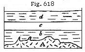
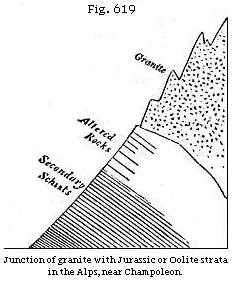

The Student’s Elements of Geology
Difficulty in ascertaining the precise Age of a Plutonic Rock. — Test of Age by Relative Position. — Test by Intrusion and Alteration. — Test by Mineral Composition. — Test by included Fragments. — Recent and Pliocene Plutonic Rocks, why invisible. — Miocene Syenite of the Isle of Skye. — Eocene Plutonic Rocks in the Andes. — Granite altering Cretaceous Rocks. — Granite altering Lias in the Alps and in Skye. — Granite of Dartmoor altering Carboniferous Strata. — Granite of the Old Red Sandstone Period. — Syenite altering Silurian Strata in Norway. — Blending of the same with Gneiss. — Most ancient Plutonic Rocks. — Granite protruded in a solid Form.
When we adopt the igneous theory of granite, as explained in the last chapter, and believe that different Plutonic rocks have originated at successive periods beneath the surface of the planet, we must be prepared to encounter greater difficulty in ascertaining the precise age of such rocks than in the case of volcanic and fossiliferous formations. We must bear in mind that the evidence of the age of each contemporaneous volcanic rock was derived either from lavas poured out upon the ancient surface, whether in the sea or in the atmosphere, or from tuffs and conglomerates, also deposited at the surface, and either containing organic remains themselves or intercalated between strata containing fossils. But the same tests entirely fail, or are only applicable in a modified degree, when we endeavour to fix the chronology of a rock which has crystallised from a state of fusion in the bowels of the earth. In that case we are reduced to the tests of relative position, intrusion, alteration of the rocks in contact, included fragments, and mineral character; but all these may yield at best a somewhat ambiguous result.
Test of Age by Relative Position.—Unaltered fossiliferous strata of every age are met with reposing immediately on Plutonic rocks; as at Christiania, in Norway, where the Post-pliocene deposits rest on granite; in Auvergne, where the fresh-water Miocene strata, and at Heidelberg, on the Rhine, where the New Red sandstone occupy a similar place. In all these, and similar instances, inferiority in position is connected with the superior antiquity of granite. The crystalline rock was solid before the sedimentary beds were superimposed, and the latter usually contain in them rounded pebbles of the subjacent granite.
Test by Intrusion and Alteration.—But when Plutonic rocks send veins into strata, and alter them near the point of contact, in the manner before described (p. 559), it is clear that, like intrusive traps, they are newer than the strata which they invade and alter. Examples of the application of this test will be given in the sequel.
Test by Mineral Composition.—Notwithstanding a general uniformity in the aspect of Plutonic rocks, we have seen in the last chapter that there are many varieties, such as syenite, talcose granite, and others. One of these varieties is sometimes found exclusively prevailing throughout an extensive region, where it preserves a homogeneous character; so that, having ascertained its relative age in one place, we can recognise its identity in others, and thus determine from a single section the chronological relations of large mountain masses. Having observed, for example, that the syenitic granite of Norway, in which the mineral called zircon abounds, has altered the Silurian strata wherever it is in contact, we do not hesitate to refer other masses of the same zircon-syenite in the south of Norway to a post-Silurian date. Some have imagined that the age of different granites might, to a great extent, be determined by their mineral characters alone; syenite, for instance, or granite with hornblende, being more modern than common or micaceous granite. But modern investigations have proved these generalisations to have been premature.
Test by Included Fragments.—This criterion can rarely be of much importance, because the fragments involved in granite are usually so much altered that they can not be referred with certainty to the rocks whence they were derived. In the White Mountains, in North America, according to Professor Hubbard, a granite vein, traversing granite, contains fragments of slate and trap which must have fallen into the fissure when the fused materials of the vein were injected from below,* and thus the granite is shown to be newer than those slaty and trappean formations from which the fragments were derived.
Recent and Pliocene Plutonic Rocks, why invisible.—The explanations already given in the 28th and in the last chapter of the probable relation of the Plutonic to the volcanic formations, will naturally lead the reader to infer that rocks of the one class can never be produced at or near the surface without some members of the other being formed below. It is not uncommon for lava-streams to require more than ten years to cool in the open air; and where they are of great
* Silliman’s Journ., No. 69, p. 123.
depth, a much longer period. The melted matter poured from Jorullo, in Mexico, in the year 1759, which accumulated in some places to the height of 550 feet, was found to retain a high temperature half a century after the eruption.* We may conceive, therefore, that great masses of subterranean lava may remain in a red-hot or incandescent state in the volcanic foci for immense periods, and the process of refrigeration may be extremely gradual. Sometimes, indeed, this process may be retarded for an indefinite period by the accession of fresh supplies of heat; for we find that the lava in the crater of Stromboli, one of the Lipari Islands, has been in a state of constant ebullition for the last two thousand years; and we may suppose this fluid mass to communicate with some caldron or reservoir of fused matter below. In the Isle of Bourbon, also, where there has been an emission of lava once in every two years for a long period, the lava below can scarcely fail to have been permanently in a state of liquefaction. If then it be a reasonable conjecture, that about 2000 volcanic eruptions occur in the course of every century, either above the waters of the sea or beneath them,† it will follow that the quantity of Plutonic rock generated or in progress during the Recent epoch must already have been considerable.
But as the Plutonic rocks originate at some depth in the earth’s crust, they can only be rendered accessible to human observation by subsequent upheaval and denudation. Between the period when a Plutonic rock crystallises in the subterranean regions and the era of its protrusion at any single point of the surface, one or two geological periods must usually intervene. Hence, we must not expect to find the Recent or even the Pliocene granites laid open to view, unless we are prepared to assume that sufficient time has elapsed since the commencement of the Pliocene period for great upheaval and denudation. A Plutonic rock, therefore, must, in general, be of considerable antiquity relatively to the fossiliferous and volcanic formations, before it becomes extensively visible. As we know that the upheaval of land has been sometimes accompanied in South America by volcanic eruptions and the emission of lava, we may conceive the more ancient Plutonic rocks to be forced upward to the surface by the newer rocks of the same class formed successively below—subterposition in the Plutonic, like superposition in the sedimentary rocks, being usually characteristic of a newer origin.
* See “Principles,” Index,
“Jorullo.”
† Ibid., “Volcanic Eruptions.”
In Fig. 617 an attempt is made to show the inverted order in which sedimentary and Plutonic formations may occur in the earth’s crust. The oldest Plutonic rock, No. I, has been upheaved at successive periods until it has become exposed to view in a mountain-
chain. This protrusion of No. I has been caused by the igneous agency which produced the newer Plutonic rocks Nos. II, III and IV. Part of the primary fossiliferous strata, No. I, have also been raised to the surface by the same gradual process. It will be observed that the Recent strata No. 4 and the Recent granite or Plutonic rock No. IV are the most remote from each other in position, although of contemporaneous date. According to this hypothesis, the convulsions of many periods will be required before Recent or Post-tertiary granite will be upraised so as to form the highest ridges and central axes of mountain-chains. During that time the recent strata No. 4 might be covered by a great many newer sedimentary formations.
Miocene Plutonic Rocks.—A considerable mass of syenite, in the Isle of Skye, is described by Dr. MacCulloch as intersecting limestone and shale, which are of the age of the lias. The limestone, which at a greater distance from the granite contains shells, exhibits no traces of them near its junction, where it has been converted into a pure crystalline marble.* MacCulloch pointed out that the syenite here, as in Raasay, was newer than the secondary rocks, and Mr. Geikie has since shown that there is a strong probability that this Plutonic rock may be of Miocene age, because a similar Syenite having a true granitic character in its crystallisation has modified the Tertiary volcanic rocks of Ben More, in Mull, some of which have undergone considerable metamorphism.
Eocene Plutonic Rocks.—In a former part of this volume (Chapter 16), the great nummulitic formation of the Alps and Pyrenees was referred to the Eocene period, and it follows that vast movements which have raised those fossiliferous rocks from the level of the sea to the height of more than 10,000 feet above its level have taken place since the commencement of the Tertiary epoch. Here, therefore, if anywhere, we might expect to find hypogene formations of Eocene date breaking out in the central axis or most disturbed region of the loftiest chain in Europe. Accordingly, in the Swiss Alps, even the flysch, or upper portion of the nummulitic series, has been occasionally invaded by Plutonic rocks, and converted into crystalline schists of the hypogene class. There can be little doubt that even the talcose granite or gneiss of Mont Blanc itself has been in a fused or pasty state since the flysch was deposited at the bottom of the sea; and the question as to its age is not so much whether it be a secondary or tertiary granite or gneiss, as whether it should be assigned to the Eocene or Miocene epoch.
* “Western Islands,” vol. i, p. 330.
Great upheaving movements have been experienced in the region of the Andes, during the Post-tertiary period. In some part, therefore, of this chain, we may expect to discover tertiary Plutonic rocks laid open to view; and Mr. Darwin’s account of the Chilian Andes, to which the reader may refer, fully realises this expectation: for he shows that we have strong ground to presume that Plutonic rocks there exposed on a large scale are of later date than certain Secondary and Tertiary formations.
But the theory adopted in this work of the subterranean origin of the hypogene formations would be untenable, if the supposed fact here alluded to, of the appearance of tertiary granite at the surface, was not a rare exception to the general rule. A considerable lapse of time must intervene between the formation of Plutonic and metamorphic rocks in the nether regions and their emergence at the surface. For a long series of subterranean movements must occur before such rocks can be uplifted into the atmosphere or the ocean; and, before they can be rendered visible to man, some strata which previously covered them must have been stripped off by denudation.
We know that in the Bay of Baiæ in 1538, in Cutch in 1819, and on several occasions in Peru and Chili, since the commencement of the present century, the permanent upheaval or subsidence of land has been accompanied by the simultaneous emission of lava at one or more points in the same volcanic region. From these and other examples it may be inferred that the rising or sinking of the earth’s crust, operations by which sea is converted into land, and land into sea, are a part only of the consequences of subterranean igneous action. It can scarcely be doubted that this action consists, in a great degree, of the baking, and occasionally the liquefaction, of rocks, causing them to assume, in some cases a larger, in others a smaller volume than before the application of heat. It consists also in the generation of gases, and their expansion by heat, and the injection of liquid matter into rents formed in superincumbent rocks. The prodigious scale on which these subterranean causes have operated in Sicily since the deposition of the Newer Pliocene strata will be appreciated when we remember that throughout half the surface of that island such strata are met with, raised to the height of from 50 to that of 2000 and even 3000 feet above the level of the sea. In the same island also the older rocks which are contiguous to these marine tertiary strata must have undergone, within the same period, a similar amount of upheaval.
The like observations may be extended to nearly the whole of Europe, for, since the commencement of the Eocene Period, the entire European area, including some of the central and very lofty portions of the Alps themselves, as I have elsewhere shown,* has, with the exception of a few districts, emerged from the deep to its present altitude. There must, therefore, have been at great depths in the earth’s crust, within the same period, an amount of subterranean change corresponding to this vast alteration of level affecting a whole continent.
The principal effect of subterranean movements during the Tertiary Period seems to have consisted in the upheaval of hypogene formations of an age anterior to the Carboniferous. The repetition of another series of movements, of equal violence, might upraise the Plutonic and metamorphic rocks of many secondary periods; and, if the same force should still continue to act, the next convulsions might bring up to the day the tertiary and recent hypogene rocks. In the course of such changes many of the existing sedimentary strata would suffer greatly by denudation, others might assume a metamorphic structure, or become melted down into Plutonic and volcanic rocks. Meanwhile the deposition of a great thickness of new strata would not fail to take place during the upheaval and partial destruction of the older rocks. But I must refer the reader to the last chapter but one of this volume for a fuller explanation of these views.
Plutonic Rocks of Cretaceous Period.—It will be shown in the next chapter that chalk, as well as lias, has been altered by granite in the eastern Pyrenees. Whether such granite be cretaceous or tertiary, can not easily be decided. Suppose b, c, d, Fig. 618, to be three members of the Cretaceous series, the lowest of which, b, has been altered by the granite A, the modifying influence not having extended so far as c, or having but slightly affected its lowest beds. Now it can rarely be possible for the geologist to decide whether the beds d existed at the time of the intrusion of A, and alteration of b and c, or whether they were subsequently thrown down upon c. But as some Cretaceous and even Tertiary rocks have been raised to the height of more than 9000 feet in the Pyrenees, we must not assume that plutonic formations of the same periods may not have been brought up and
* See map of Europe, and explanation, in Principles, book i.
exposed by denudation, at the height of 2000 or 3000 feet on the flanks of that chain.
Plutonic Rocks of the Oolite and Lias.—In the Department of the Hautes Alpes, in France, M. Élie de Beaumont traced a black argillaceous limestone, charged with belemnites, to within a few yards of a mass of granite. Here the limestone begins to put on a granular texture, but is extremely fine-grained. When nearer the junction it becomes grey, and has a saccharoid structure. In another locality, near Champoleon, a granite composed of quartz, black mica, and rose-coloured feldspar is observed partly to overlie the secondary rocks, producing an alteration which extends for about 30 feet downward, diminishing in the beds which lie farthest from the granite. (See Fig. 619.) In the altered mass the argillaceous beds are hardened, the limestone is saccharoid, the grits quartzose, and in the midst of them is a thin layer of an imperfect granite. It is also an important circumstance that near the point of contact, both the granite and the secondary rocks become metalliferous, and contain nests and small veins of blende, galena, iron, and copper pyrites. The stratified rocks become harder and more crystalline, but the granite, on the contrary, softer and less perfectly crystallised near the junction.* Although the granite is incumbent in the section (Fig. 619), we can not assume that it overflowed the strata, for the disturbances of the rocks are so great in this part of the Alps that their original position is often inverted.
At Predazzo, in the Tyrol, secondary strata, some of which are limestones of the Oolitic period, have been traversed and altered by Plutonic rocks, one portion of which is an augitic porphyry, which passes insensibly into granite. The limestone
* Élie de Beaumont sur les Montagnes de l’Oisans, etc. Mém. de la Soc. d’Hist. Nat. de Paris, tome v.
is changed into granular marble, with a band of serpentine at the junction.*
Plutonic Rocks of Carboniferous Period.—The granite of Dartmoor, in Devonshire, was formerly supposed to be one of the most ancient of the Plutonic rocks, but is now ascertained to be posterior in date to the culm-measures of that county, which from their position, and, as containing true coal-plants, are now known to be members of the true Carboniferous series. This granite, like the syenitic granite of Christiania, has broken through the stratified formations, on the north-west side of Dartmoor, the successive members of the culm-measures abutting against the granite, and becoming metamorphic as they approach. These strata are also penetrated by granite veins, and Plutonic dikes, called “elvans.”† The granite of Cornwall is probably of the same date, and, therefore, as modern as the Carboniferous strata, if not newer.
Plutonic Rocks of Silurian Period.—It has long been known that a very ancient granite near Christiania, in Norway, is posterior in date to the Lower Silurian strata of that region, although its exact position in the Palæozoic series can not be defined. Von Buch first announced, in 1813, that it was of newer origin than certain limestones containing orthocerata and trilobites. The proofs consist in the penetration of granite veins into the shale and limestone, and the alteration of the strata, for a considerable distance from the point of contact, both of these veins and the central mass from which they emanate. (See p. 562) Von Buch supposed that the Plutonic rock alternated with the fossiliferous strata, and that large masses of granite were sometimes incumbent upon the strata; but this idea was erroneous, and arose from the fact that the beds of shale and limestone often dip towards the granite up to the point of contact, appearing as if they would pass under it in mass, as at a, Fig. 620, and then again on the opposite side of the same mountain, as at b, dip away from the same granite. When the junctions, however, are carefully examined, it is found that the Plutonic rock
* Von Buch, Annales de Chimie, etc.
† Proceed. Geol. Soc., vol. ii, p. 562; and Trans., 2nd
series, vol. v, p. 686.
intrudes itself in veins, and nowhere covers the fossiliferous strata in large overlying masses, as is so commonly the case with trappean formations.*
Now this granite, which is more modern than the Silurian strata of Norway, also sends veins in the same country into an ancient formation of gneiss; and the relations of the Plutonic rock and the gneiss, at their junction, are full of interest when we duly consider the wide difference of epoch which must have separated their origin.
The length of this interval of time is attested by the following facts: The fossiliferous, or Silurian, beds rest unconformably upon the truncated edges of the gneiss, the inclined strata of which had been denuded before the sedimentary beds were superimposed (see Figure 621). The signs of denudation are twofold; first, the surface of the gneiss is seen occasionally, on the removal of the newer beds containing organic remains, to be worn and smoothed; secondly, pebbles of gneiss have been found in some of these Silurian strata. Between the origin, therefore, of the gneiss and the granite there intervened, first, the period when the strata of gneiss were denuded; secondly, the period of the deposition of the Silurian deposits upon the denuded and inclined gneiss, a. Yet the granite produced after this long interval is often so intimately blended with the ancient gneiss, at the point of junction, that it is impossible to draw any other than an arbitrary line of separation between them; and where this is not the case, tortuous veins of granite pass freely through gneiss, ending sometimes in threads, as if the older rock had offered no resistance to their passage. These appearances may probably be due to hydrothermal action (see p. 584). I shall merely observe in this place that had such junctions alone been visible, and had we not learnt, from other sections, how long a period elapsed between the consolidation of the gneiss and the injection of this granite, we might have suspected that the gneiss was scarcely solidified,
* See the Gæa Norvegica and other works of Keilhau, with whom I examined this country.
or had not yet assumed its complete metamorphic character when invaded by the Plutonic rock. From this example we may learn how impossible it is to conjecture whether certain granites in Scotland, and other countries, which send veins into gneiss and other metamorphic rocks, are primary, or whether they may not belong to some secondary or tertiary period.
Oldest Granites.—It is not half a century since the doctrine was very general that all granitic rocks were primitive, that is to say, that they originated before the deposition of the first sedimentary strata, and before the creation of organic beings (see p. 34). But so greatly are our views now changed, that we find it no easy task to point out a single mass of granite demonstrably more ancient than known fossiliferous deposits. Could we discover some Laurentian strata resting immediately on granite, there being no alterations at the point of contact, nor any intersecting granitic veins, we might then affirm the Plutonic rock to have originated before the oldest known fossiliferous strata. Still it would be presumptuous, as we have already pointed out (p. 464), to suppose that when a small part only of the globe has been investigated, we are acquainted with the oldest fossiliferous strata in the crust of our planet. Even when these are found, we can not assume that there never were any antecedent strata containing organic remains, which may have become metamorphic. If we find pebbles of granite in a conglomerate of the Lower Laurentian system, we may then feel assured that the parent granite was formed before the Laurentian formation. But if the incumbent strata be merely Cambrian or Silurian, the fundamental granite, although of high antiquity, may be posterior in date to known fossiliferous formations.
Protrusion of Solid Granite.—In part of Sutherlandshire, near Brora, common granite, composed of feldspar, quartz, and mica is in immediate contact with Oolitic strata, and has clearly been elevated to the surface at a period subsequent to the deposition of those strata.* Professor Sedgwick and Sir R. Murchison conceive that this granite has been upheaved in a solid form; and that in breaking through the submarine deposits, with which it was not perhaps originally in contact, it has fractured them so as to form a breccia along the line of junction. This breccia consists of fragments of shale, sandstone, and limestone, with fossils of the oolite, all united together by a calcareous cement. The secondary strata at some distance from the granite are but slightly disturbed, but in proportion to their proximity the amount of dislocation becomes greater.
* Murchison, Geol. Trans., 2nd series, vol. ii, p. 307.
Mr. T. McKenney Hughes has suggested to me in explanation of these phenomena that they may be the effect of the association of more pliant strata with hard unyielding rocks, the whole of which were subjected simultaneously to great movements, whether of elevation or subsidence, and of lateral pressure, during which the more solid granite, being incapable of compression, was forced through the softer beds of shale, sandstone, and limestone. He remarks that similar breccias with slickensides are observed on a minor scale where rocks of different composition and rigidity are contorted together. Such protrusion may have been brought about by degrees by innumerable shocks of earthquakes repeated after long intervals of time along the same tract of country. The opening of new fissures in the hardest rocks is a frequent accompaniment of such convulsions, and during the consequent vibrations, breccias must often be caused. But these catastrophes, as we well know, do not imply that the land or sea of the disturbed region are rendered uninhabitable by living beings, and by no means indicate a state of things different from that witnessed in the ordinary course of nature.